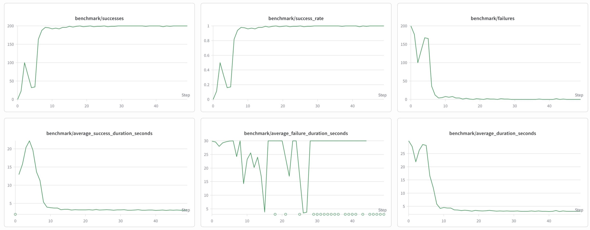

Waterloo Visuomotor
Hello Gripper
An End-to-End Platform for Visuomotor Imitation Learning and Asynchronous Robot Control
Waterloo Visuomotor
A learned policy completes the randomized-box pick-and-place task in closed loop. The transparent gripper and colored markers visualize successive action-horizon predictions.
Abstract
Hello Gripper is a simulation-first research platform for studying the complete visuomotor imitation-learning loop. A two-finger gripper must pick up a randomly placed cube, move it to a target box, release it, and lift clear. Although the task is compact, it includes contact-rich manipulation, visual and geometric randomization, explicit termination rules, and the timing constraints of closed-loop deployment.
The system connects human teleoperation, a ground-truth scripted expert, successful policy rollouts, synchronized episode recording, behavior-cloning training, asynchronous inference, and deterministic checkpoint evaluation. The current policy combines frozen DINOv3 visual features with action-history and pose tokens, then predicts a future action horizon. At runtime, observation, replanning, and execution run on separate clocks so neural inference never blocks the 100 Hz controller.
System Overview
The project is organized around one shared data and timing contract, from the first demonstration to final closed-loop evaluation.
Task
Pick a cube from a randomized table location, place it inside a target box, and retract the gripper within 30 seconds.
Variation
Cube pose, target-box position, cube dimensions and mass, colors, lighting, camera viewpoint, and movement speed.
Success
The cube remains inside the box while the gripper lifts clear. Timeout or an unreachable cube terminates the attempt.
Data Collection and Control
The same interactive simulator supports demonstration collection, model playback, hybrid intervention, and detailed diagnostics.
Three sources, one episode format
Episodes can come from human teleoperation, a scripted expert using ground-truth MuJoCo state, or successful inference rollouts. Hybrid episodes preserve a model/teleop label at every timestamp.
- Frames: synchronized overview images
- Actions: command deltas and target residuals
- State: mocap, palm, cube, and finger poses
- Metadata: task, result, source, seed, and randomization
A background worker writes complete HDF5 episodes and optional MP4 review videos without pausing simulation. Failed automated attempts are discarded by default.
Asynchronous inference with three clocks
The control loop separates observation sampling, neural replanning, and trajectory execution. Single-slot queues discard stale requests and results, so the controller always works with the freshest available information.
- Observe10 Hz
Capture the training-aligned observation window and recent 100 Hz action history.
- Replan5 Hz
Run the policy on a background thread and build a time-stamped trajectory.
- Execute100 Hz
Interpolate the latest trajectory and apply guarded Cartesian and grip commands.
Policy Architecture
The current model uses a compact multimodal tokenizer rather than training a large visual backbone end to end.
Patch features pooled to 24 visual tokens
Type, position, and temporal embeddings
Learned-query pooled observations
[dx, dy, dz, grip] × N
Now-anchored actions
Future Cartesian targets are represented relative to the current observation, keeping training and live control aligned.
Action chunking
The model predicts multiple future controls at once, providing a smooth trajectory between slower neural replans.
Frozen feature cache
Precomputed float16 DINO tokens remove repeated encoder work and provide approximately 9× training throughput.
Architectures explored
| Family | Architecture | Research question |
|---|---|---|
| Baseline | State MLP | How far can privileged low-dimensional state go without images? |
| Visual | CNN + MLP | Can a spatial-softmax CNN support fast direct action regression? |
| Visual | DINO ConvNeXt | How do frozen convolutional DINOv3 features compare with ViT tokens? |
| Sequence | CNN Transformer | Does a transformer action decoder improve temporal prediction? |
| Generative | Diffusion head | Can conditional denoising model multimodal action sequences? |
| Generative | Flow matching | Can continuous flow prediction provide a simpler generative head? |
| Ablation | Camera-only + auxiliary head | Can explicit localization supervision replace privileged cube position? |
Checkpoint Evaluation
Every checkpoint is evaluated headlessly on the same deterministic episode seeds, using the same observation cadence and asynchronous control path as interactive deployment.

Qualitative Results and Diagnostics
The visualization tools expose the policy’s planned motion and align spatial trajectories with every recorded control signal.
Software
The repository includes the MuJoCo task, interactive controls, automated expert, background recorder, training pipeline, live checkpoint policy, Rerun visualizers, and deterministic benchmark tooling.
Training can run locally, through SLURM on Alliance clusters, or on Modal. Frozen visual features can be cached once and reused across model sweeps.
# Set up simulation and model dependencies
bash scripts/setup_dev.sh --model
# Collect randomized expert demonstrations
.venv/bin/python scripts/expert_recorder.py \
--num-episodes 100 --random-visuals \
--random-camera --random-cube-size
# Train with frozen visual features
.venv/bin/python train.py \
--task place_cube_random_box_v1 \
--image-encoder dino --feature-cache